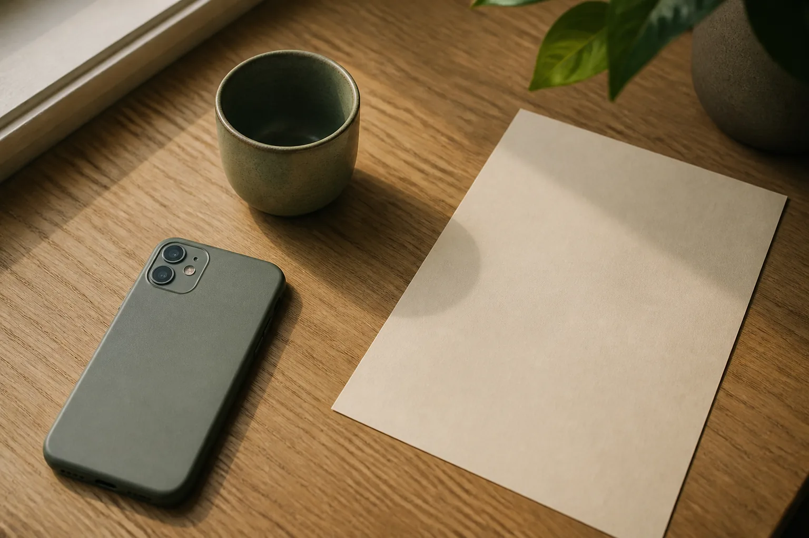

Hire a librarian for your memory.
Zenod files and organizes your notes and voice notes in a library you keep in your own GitHub or Google Drive. Any agent you choose can reach it, so your context stays yours.
You hire Zenod. You keep the library.
Your memory library is plain Markdown in your own GitHub repository or, on Hosted, a Google Drive folder. Zenod is the librarian you hire to file it, keep it tidy and keep the originals.
It also makes the library easy for third-party agents to reach, so your context moves with you from one agent to the next. If you ever change librarian, the library is already where you keep it.
Obsidian opens the files as they are.
Say it once. Zenod files it.
Send a voice note on WhatsApp while the thought is fresh. Zenod keeps the recording and the transcript, sorts what you said into projects, people and preferences, and files it in your library.
WhatsApp comes with Hosted. Self-hosted uses Telegram.
Kept as you said it.
The recording stays as the original. Notes built from it link back to it, so you can check any summary against what you said.
Ask the librarian.
Ask “What did I say about the light in that flat?” and Zenod finds the thought and shows you the voice note it came from.

Any agent you choose.
Claude, Codex and other MCP clients reach your library through Zenod, and add to it there. Change the agent and the library stays where it is.
Needs a compatible client and a configured connection. How to connect
Why the name.
Zenodotus was the first librarian of the Library of Alexandria. The library was the place. The librarian made it usable.
Run it your way.
Self-hosted
Free
Run Zenod on your own server with your AI provider key, a Telegram bot and a GitHub vault.
Read the install guideZenod Hosted
€9 per month + VAT
We run it for you. Managed AI usage and WhatsApp are included. Keep your vault in GitHub or in a Google Drive folder the app creates.
See HostedSame open-source engine in both. Your memory is ordinary Markdown either way.